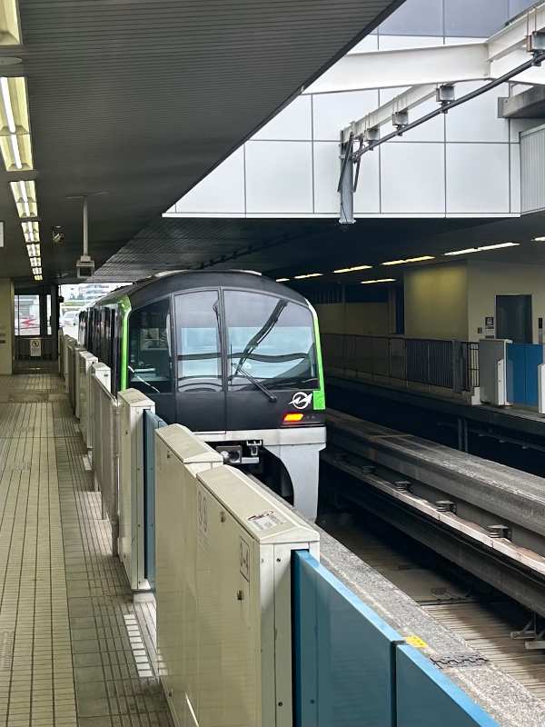
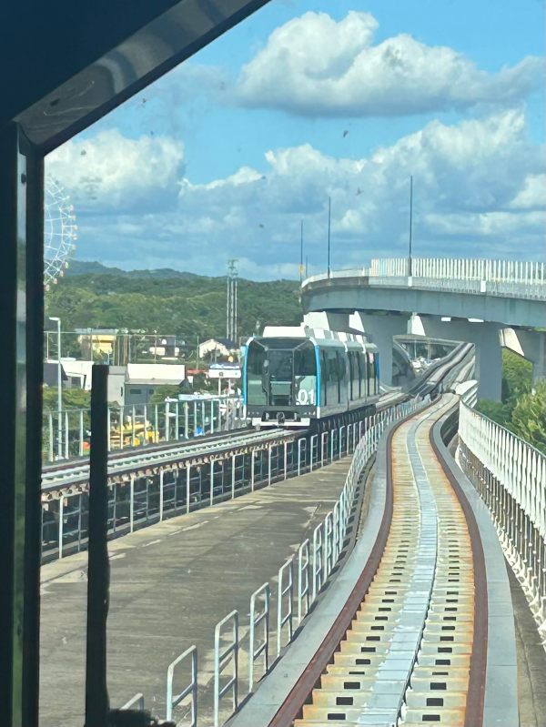

🚫🚆(I rode) Everything *but* the trains in Japan
Shonan Monorail (image credit)
As an engineer, it’s impossible to visit Japan and not be obsessed with its trains. From record-breaking bullet trains to spaghetti-like subway networks, Japan does trains better than anywhere else I’ve been. But even the most train-obsessed nations acknowledge that heavy rail isn’t a catch-all solution. So as a bit of a curveball, I’m writing this transit post about everything but the trains in Japan.
Trams
Osaka’s Hankai Tram line - it’s seen better days
Right out of the gate, we’ll start with something train-adjacent: Trams. These overgrown rails (above) are all that remain of Osaka’s once sprawling suburban tram network. In the early 20th century, gas-powered buses could only carry a few people at a time. Short of a real train, trams like these were really the only solution for urban transit. Trams were once everywhere - take a peek at this ~1920s map of Osaka, and try to find a major road without a tram line!
Part of a 1920’s map of Osaka: the black lines in the middle of the roads are trams! (image credit)
Osaka may have had miles of tram lines, but it wouldn’t last long. Buses became more and more efficient, and they didn’t require expensive rails or electricity lines like trams did. As buses continued to grow in popularity, Osaka’s (and indeed, Japan’s) tram lines began closing for business. Just like San Francisco, the only lines that survived were the ones that couldn’t be converted into high-density streets.
So it was with Osaka’s only remaining tram line, the Hankai line. The Hankai doesn’t even reach downtown Osaka anymore. Not a problem - most commuters would favor the faster subway lines a stone’s throw away. Now, its purpose is more local - connecting the entertainment district of Shinsekai, the ancient Sumiyoshi Taisha shrine, and any requested stops in between.
To me, this is exactly where trams shine. Buses are efficient, but communities don’t spring up around bus stops. Conversely, tram lines historically become the backbone of tight-knit “streetcar suburbs”. “Community” may be a tough sell to cash-strapped public transit agencies. But with smaller cities in Japan (Hiroshima, Fukuoka, Nagasaki) opting to invest further in trams over subways, maybe trams will have their long-delayed resurgence after all.
Another tram line, the Eno-Den. This line was so popular with tourists it was re-converted to run full-size trains through the resort town of Enoshima
Monorails
By the 1970s, most people saw trains as dingy, outdated anachronisms. Why travel by rail if a jet can get you there faster, and in style? However, one form of transit still captured the public’s imagination: The Monorail. At one point, Washington DC and LA were actively considering futuristic monorails for their brand new public transit networks. The future was now!
|  |  |
|---|---|
| Tokyo’s (normal, non-suspended) monorail | Nagoya’s Maglev (though this train technically levitates, making it a zero-rail?) |
And what’s not to like? Monorails are undoubtedly futuristic, and elevated tracks take up less space and block less sunlight in dense cities. Unfortunately, that’s where the list of upsides end. Monorails are much more complicated than normal trains - switching tracks means moving massive blocks of concrete. Monorail tunnels actually need to be taller than the equivalent train tunnel, since the tracks themselves are taller. Finally, if you’re running a transit agency, you can’t swap the cars between standard rail or vice versa - they’re monorail or nothing. Because of this, most monorails of this era were essentially vanity projects for municipalities with money to burn. Think Disney World, Las Vegas, and… 1980s Japan. After Tokyo’s first monorail (In 1964!), they began popping up all over: in Fukuoka (1985), Chiba (1988), Osaka (1990) and Tokyo again (1998). But of Japan’s monorails, the coolest is undoubtedly Mitsubishi Electric’s Suspended Shonan Monorail.
Shonan Monorail (image credit)
View from the front of the Shonan Monorail
Americans may know Mitsubishi as the producer of America’s cheapest car and not much else. But in Japan, Mitsubishi Industries is a household name for air conditioners, aircraft, and construction equipment. And in the 1970s, they were at the top of their game. What would be a better symbol of their technological prowess than a hyper-complicated suspended monorail running past their front door? (Like I mentioned earlier - vanity project!) The Shonan Monorail cars dangle below an elevated track, giving a phenomenal (if a tad scary) view of the scenery below. This also means the cars swing outwards around the bends, just like a theme park ride. The crazy thing is, normal people still ride this every day to get to work! I’m definitely not the only fan - when I rode, a whole crowd of people were lined up to take pictures and videos at the front of the train. As far as I can tell, there’s no practical reason for the Shonan line to be a hanging monorail - it’s just cool!
Terminus for the Shonan Monorail. Lots of people actually use this as transit!
Cars (Specifically ~2012 Toyota Spade)
A tiny kei-car, in sports coupe guise. That’s a normal-sized Toyota SUV right behind it!
I know what you’re thinking - Ethan, Japan is the land of public transit! Why are you writing about cars here? Also, haven’t you written an entire article about Japanese cars before? Correct on both counts - here I want to break down how cars fit into Japan’s transit landscape, and how that differs from the States.
It’s not like owning a car is cheap in Japan. The second you buy a car, you’re immediately hit with a bevy of one-time and yearly taxes. Yearly taxes include a tax on engine size (displacement) and vehicle weight. One-time taxes are based off of how “eco-friendly” the car is and the sale price of the car (consumption tax). As an example, buying a Toyota RAV4 (currently the most popular car in the US) would would be taxed ~$2500 (consumption tax) + $1000 (environmental tax) off the bat. Then, you’d owe an additional $305 (displacement tax) + $105 (weight tax) + $500 inspection yearly.1 Oh, and the car only cost $31,000 begin with! Finally, gas is taxed at $.40 a gallon and every highway is a toll road. Ouch.
My friend’s whip of choice - the Toyota Spade. The name is apparently a portmanteau of the words Space and Wide.
Unsurprisingly, nearly every Japanese market car is built to dodge as many taxes as possible. Case in point, my friend’s Toyota Spade. It only weighs 2400 lbs, nearly half that of the RAV4. With a tiny 1.3L engine, it’s taxed at only 2/3s what a RAV4 costs. Of course, building a usable car this light requires ingenuity, which the Spade has - well - in spades. The Spade is like a two-door, but the passenger door slides open like a minivan! This lets six-footers like my friend to access the (surprisingly large) backseat with ease. The tax metagaming can go even deeper. If my friend wasn’t so tall, he could opt for an even smaller, lighter kei-car for maximum tax optimization!
If you want big car styling for small car money, Mitsuoka has you covered. You can buy a 3/4 size Challenger right off of the lot!
Why would someone in Japan bother jumping through these hoops in the first place? Just like in the US, geography plays a big role. Trains and buses may be less frequent in the suburbs, and in rural areas they may not exist at all. If you own a business, you’re not going to deliver your goods by train. So for many, owning a car may be less of a luxury and more a way of life. Finally, road trips are just as popular in Japan as they are in the States. Not surprising to me - if you live in a city of 37 million, sometimes you need to get away from it all. For locals and tourists alike, cars are the still the best way to explore non-urban Japan.
Conculsion
That’s about it for this transit roundup! There were a few options I didn’t get to try on my most recent trip (overnight ferry, cable car) and one I’ve already written about (Maglev). Thanks for tuning in, and let me know if there any other forms of transit I should check out on my next visit!
Note: Of course, I still saw did a ton of train-related stuff on this trip. See the below pics from the Bullet Train museum in Nagoya!
Yours truly in front of the world’s first bullet train! “Dr. Yellow”, the bullet train used to diagnose tracks after earthquakes and the like Retro computers once used to process bullet train tickets